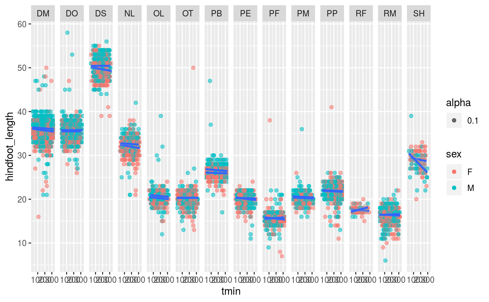

07_Exploration_Hands_On.RmdIn order to test our hypothesis, we are going to get some climate data from NOAA.
install.packages("rnoaa")
## Installing package into '/tmp/RtmpYXJ7C4/temp_libpath13c1b706c11'
## (as 'lib' is unspecified)library(tidyverse)
## ── Attaching packages ────────────────────────────────────────── tidyverse 1.3.0 ──## ✓ ggplot2 3.3.2 ✓ purrr 0.3.4
## ✓ tibble 3.0.3 ✓ dplyr 1.0.0
## ✓ tidyr 1.1.0 ✓ stringr 1.4.0
## ✓ readr 1.3.1 ✓ forcats 0.5.0## ── Conflicts ───────────────────────────────────────────── tidyverse_conflicts() ──
## x dplyr::filter() masks stats::filter()
## x dplyr::lag() masks stats::lag()Next, we will get an API key for accessing government data. Go to this website to obtain one. We will save this key in a file called .rprofile. API keys are basically like passwords between ourselves and a website. They enable us to access data securely.
Once this is complete, we can use the package. Here is the first command you will use:
library(rnoaa) ncdc_locs(locationcategoryid='CITY', sortfield='name', sortorder='desc', token = "FWsjDoEyQILqGajMQXdKhGusHDNZSpfR")
What information do you think you should get from this command?
We can get local weather, basically. But we don’t really know what weather station we need! Let’s see if we can find out. First, let’s install the lawn package.
install.packages("lawn", dependencies = TRUE)
Now we’ll try using it.
How could you use Google Maps to get the information to make a box that covers Portal, AZ? Try it!
OK, let’s give those coordinates to rNOAA and see if we have weather stations in there.
ncdc_stations(extent = c(Your coordinates here!))
Does this work? If no, try expanding.
Now, once you have your base station, try pulling the data for it:
ncdc(datasetid='NORMAL_DLY', stationid=?, datatypeid=?, startdate = ?, enddate = ?)
Have a look at the surveys data set to see when you should start and stop.
We then found a good station and pulled the minimum and maximum temperatures for all dates in the database:
temp_data <- meteo_tidy_ghcnd(stationid = "USW00003145", var = c("tmin", "tmax"))
And converted the temperatures to Fahrenheit while plotting them to get a sense of temperature variation over time:
ggplot(temp_data, mapping = aes(x = date, y=tmin*4/9)) + geom_point()
And we fit a linear model to see if temperature was increasing over time:
lm(date~tmax, data=temp_data) ggplot(temp_data, mapping = aes(x = date, y=(tmax*4/9)-32)) + geom_line() + geom_smooth(method='lm') write_csv(x = temp_data, "data_output/noaa_data.csv")
We will want to merge these data with the data from surveys.csv to look at mammal size trends over time. Which means we need a column on which to merge. Dates make sense. So then, we massaged the dates in surveys.csv into a more usable format.
library(tidyverse) surveys <- read_csv("data_output/surveys_complete.csv")
## Parsed with column specification:
## cols(
## record_id = col_double(),
## month = col_double(),
## day = col_double(),
## year = col_double(),
## plot_id = col_double(),
## species_id = col_character(),
## sex = col_character(),
## hindfoot_length = col_double(),
## weight = col_double(),
## genus = col_character(),
## species = col_character(),
## taxa = col_character(),
## plot_type = col_character()
## )library(lubridate)
##
## Attaching package: 'lubridate'## The following objects are masked from 'package:base':
##
## date, intersect, setdiff, unionnew_surveys <- surveys %>% mutate(date = make_date(year, month, day)) write_csv(x = new_surveys, "data_output/date_conversion.csv")
Now, we’ll merge the two data sources. Have a look at the merge function. Try it.
noaa_data <- read_csv("data_output/noaa_data.csv")
## Parsed with column specification:
## cols(
## id = col_character(),
## date = col_date(format = ""),
## tmax = col_double(),
## tmin = col_double()
## )merged_data <- merge(noaa_data , new_surveys)
Next, plot an animal body size measure by temp. Is there a relationship? What about body size measures by date?
ggplot(merged_data, mapping = aes(x = tmin, y = hindfoot_length)) + geom_point(aes(alpha = 0.1, color = sex)) + facet_grid(cols = vars(species_id)) + geom_smooth(aes(group=sex), method='lm')
## `geom_smooth()` using formula 'y ~ x'